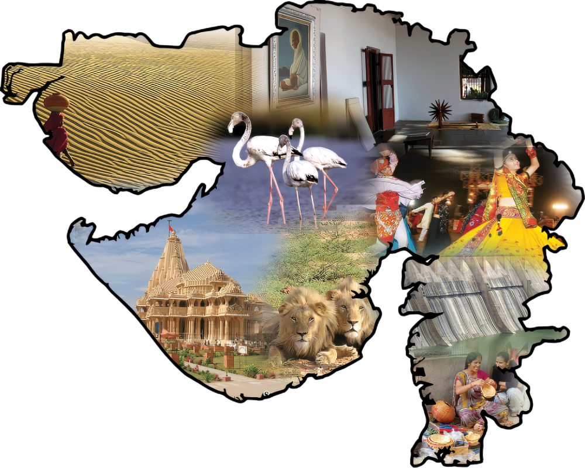
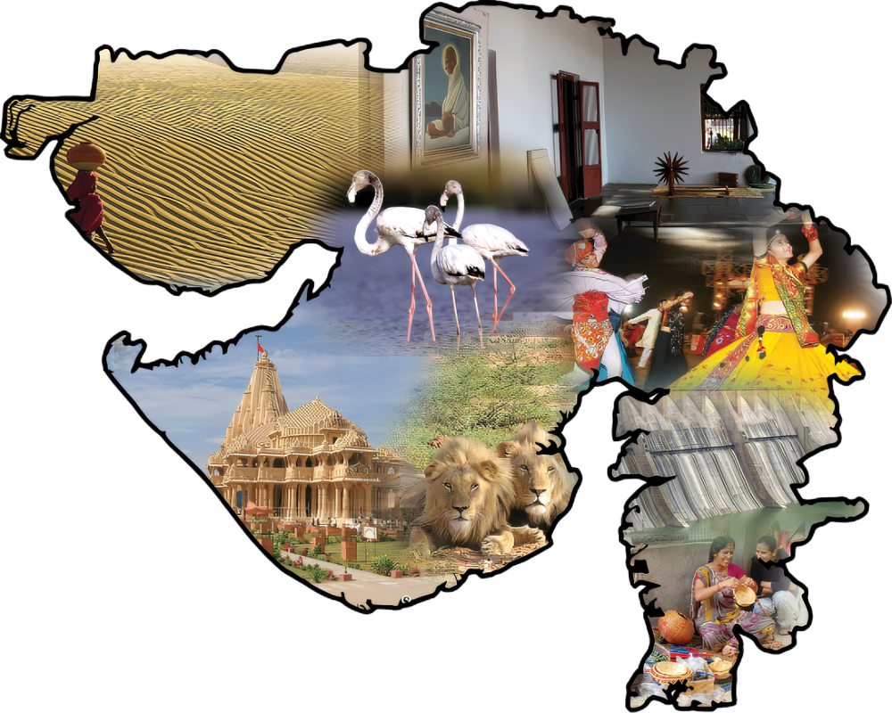
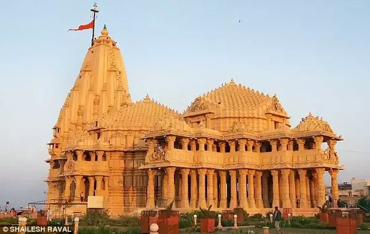
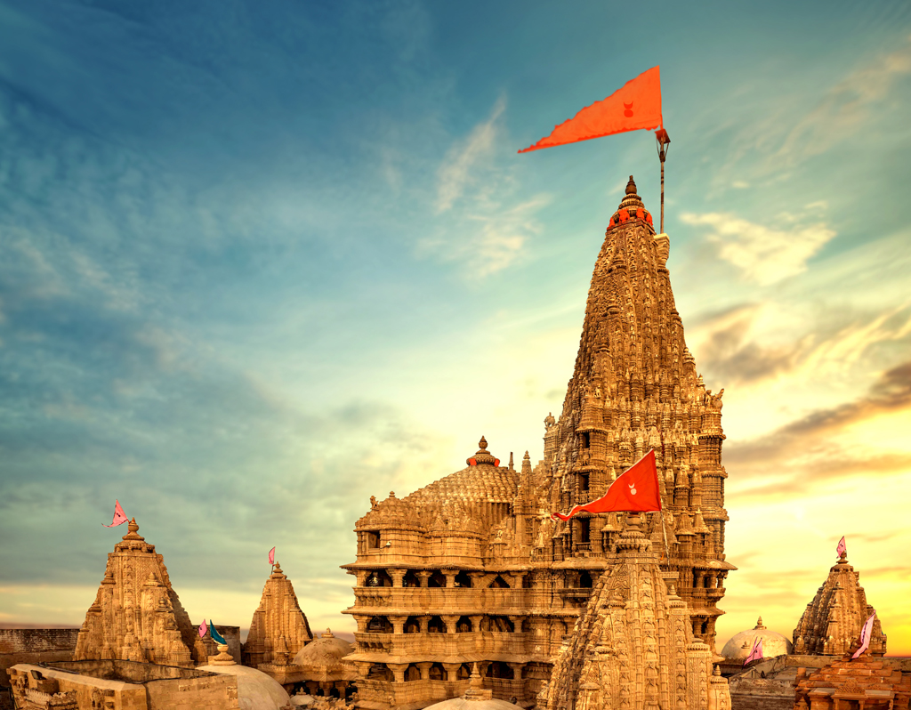
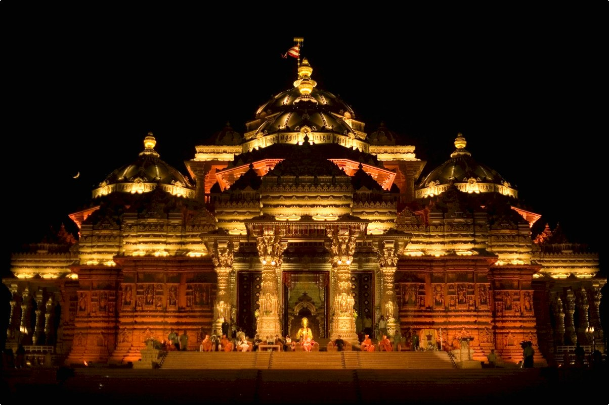
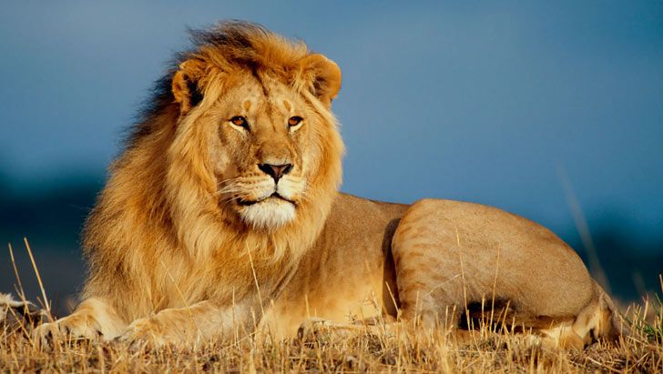
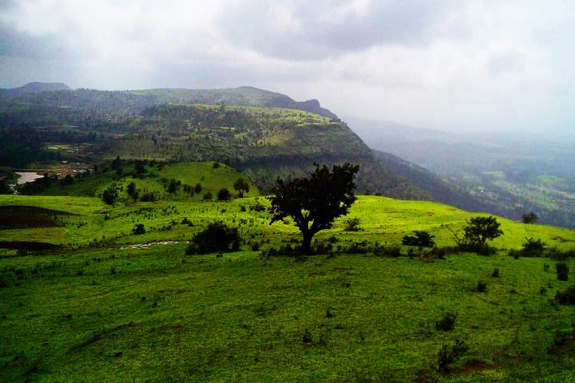
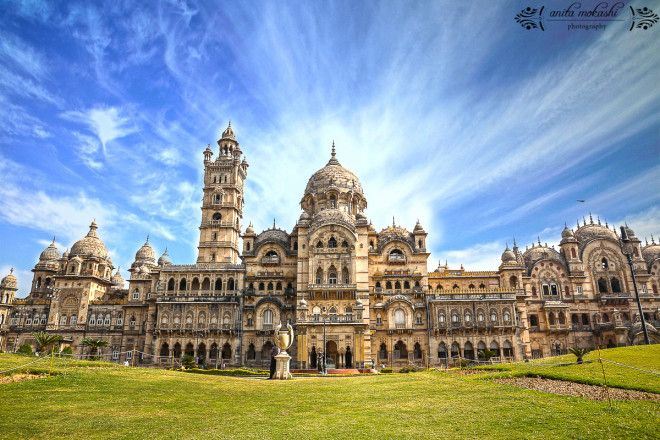
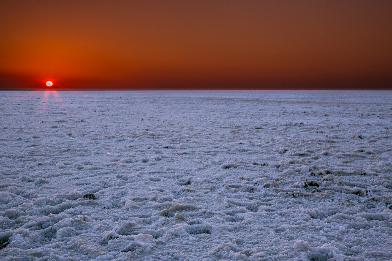

1. Somnath
Somnath is the First and most sacred of the 12 Jyotirlings of Lord Shiva.
According to the legend the Hindu moon god known as Soma Builta temple entirely of gold to pay reverece to the lord's glory and compassion and the Somnath Temple.
As per the legends the same temple was reconstructed by Ravana in Silver, Krishna in wood, and by King Bhimdev from Stone.
This temple has been destroyed then reconstructed on number of occasion and finally after india got Independence.
Each year millions of devotees seek the blessing of Lord Shiva at Somnath, rated one of the top temples in India when it comes to religious significance.
.....................................................................................................................................
.....................................................................................................................................
.....................................................................................................................................
....................................

2. Dwarka
Dwarkadheesh Temple is one of the finest temples in India believed to have been built by the grandson of Lord Krishna himself.
Appearing to be rising from the waters of Arabian Sea, the temple is renowned for its exquisitely carved architecture.
It is considered the holiest Hindu Temples and part of the Char Dham Yatra, the most sacred of the all Hindu pilgrimages.
According to the legend, Lord Krishna settled down in Dwarka with his Yadava Clan.
Upon his death as Krishna avatar, the entire Dwarka Island was submerged in the sea.
The recent archaeological excavations have supported these theories that present day Dwarka is one of the 6 ancient cities that existed here.
.....................................................................................................................................
.....................................................................................................................................
...................................

3. Akshardham
Ahmedabad, the fifth largest city in India, is the commercial hub of Gujarat and also one of the best places to be in Gujarat.
The city is renowned for its deep rooted culture, exquisite architecture and exuberant people.
Ahmedabad was founded by the King Karnadev in 11th Century and was named after him as Karnawati untill Sultan Ahmed Shah invaded the kingdom in 1411 and renamed the city after himself.
The tourist attractions in Ahmedabad include Bhadra Fort, well laid out historical buildings, mosques and lakes.
Mahatma Gandi's ashram, known as Sabarmati Ashram is one of the major draws of the city along with the nearby modern marvel Akshardham Temple in Gandhinagar.
Bhadra Fort, Jhoolta (shaking) Minarets and Teen Darwaza are the historical wonders in the city.
Natural beauties include the emerald Kankaria Lake and Vastrapur Lake.
.....................................................................................................................................
..................................................

4. Gir National Park
Gir National Park is the only place in the world where one can spot the majestic Asiatic lion.
Nowhere else will you get a chance to spot them as close as Gir National Park.
Spread across an area of almost 1,412 sq. km of land, it's the only national park in India where a tribal community have perfected the art of harmonious co-existence with wildlife.
Gir National Park is among the topmost places to visit in Gujarat mostly due to the Asiatic Lion.
However, the park also boasts the largest dry deciduous forest in Western India.
Apart from the Asiatic Lion, the park is also home to around 300 species of birds and a variety of other animals.
The best way of enjoy sightseeing in Gir National Park is through a jeep safari.
.....................................................................................................................................
............................................................................................................................................
..........................................

5. Saputara Hills
Saputara Hill Station is where you go to when you want to spend your time amidst nature.
Located in the Sahyadri range at an altitude of almost 1,000m, this hill-station derives its name from the snake god which is highly revered by the tribal people.
Saputara means "the abode of serpents".
The road to Saputara is itself delightful.
As the bus makes its way towards Saputara, you gradually feel the silence embracing the air, leaving the unrelenting commotion of the city behind you.
There are many activities to keep you thoroughly entertained.
One of these is trekking to Gandhi Shikhar during dawn and watching the sunlight gradually clothe the landscape.
The dense forest cover captivates your attention. During the summers, enjoy a leisurely stroll on the Governor's Hill and watch the sun drape the sky in crimson at the Saputara Lake.
.....................................................................................................................................
..................................................

6. Lukshami Places
Vododara, referred to as the cultural capital of the state is one of the most visited tourist places in Gujarat.
After the waning Mughals were expelled by Marathas established Vadodara as their capital.
The city offer a seamless fusion of the past and present.
the city flourished and modernized under the aegis of Maharaja Sayajirao and enjoyed great autonomy even during British Rule in India.
When it comes ti things to do in Vadodara, you may visit Kadia Dungar Caves, the Lakshmi Vilas Palace, Nazarbaugh Palace, Makarpura Palace, Sursagar Talav and the amazing Sayaji Baug.
Sayaji Baug was built by Maharaja Sayajirao in 1879 and is named after him.
The Sayaji Baug also called Kamati Baug includes 45 hectares of garden grounds, a flower clock, two museums, a planetarium, a zoo and a toy train.
.....................................................................................................................................
..................................................

7. Kutch Desert
There's a saying that goes in Gujarat.
"Kutch Nahin dekha to kuchh nahin dekha" which translates to "you haven't seen anything if you haven't seen Kutch."
Kutch is the deserving top desination to visit in Gujarat especially when the Rann Mahotsav is in full swing.
Wedged between the Arabian Sea and the boundless Thar Desert, Rann of Kutch is mesmerizing symphony of salt and sand.
This white symphony reaches its crescendo on a full moon night.
What makes Kutch even more surreal is that during the monsoon, it gets submerged in the water.
For the remaining eight months of the year, it's a gigantic stretch of white salt lending it the look of white desert.
During full moon nights cultural programs celebrating Gujarat's rich culture and traditions are usually held at Dhordo.
A moon light camel safari is the Rann of a Kutch is one of the must to do things.